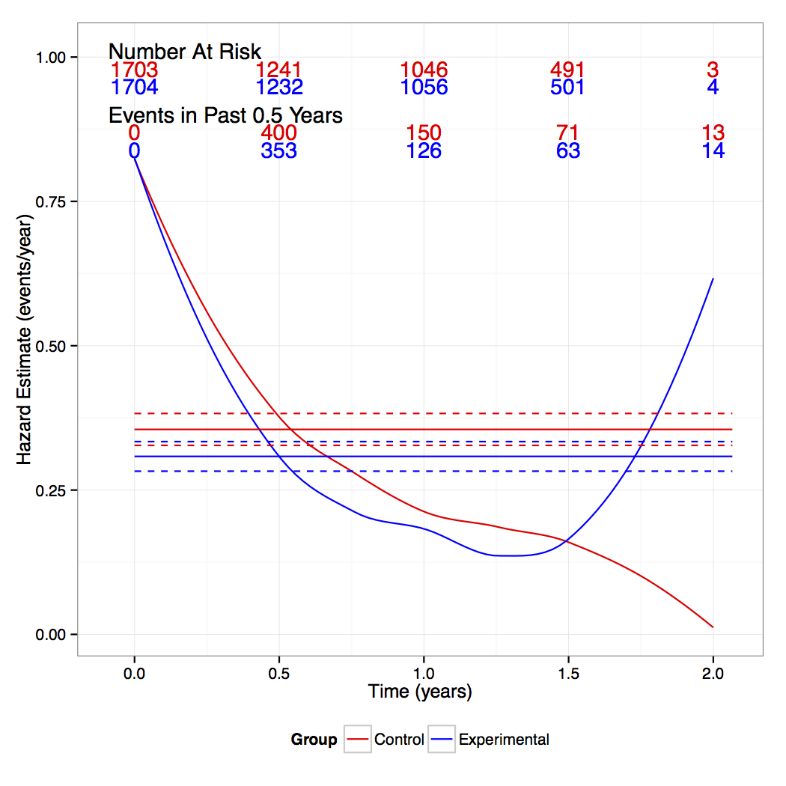

class: center, middle, gray # Additive Hazards Models in Non-Inferiority Trials #### Lee S. McDaniel #### University of Wisconsin, Madison ??? * Thank you for having me (Dr. Fang) * Talking about clinical trials, esp. Non-inf * Exploring sample size calculations when outcome is time to event * Accomplished from additive hazards perspective --- class: image # Consequences of Analysis <center><img width="550px" src="Figs/errorsim.jpg" /></center> ??? - Only way to calculate sample size in a NI trial with additive margin is w/ parametric assumptions - Analyzing using exponential assumption can cause major problems - Reduced power, inflated type 1 error - Both are unacceptable - Shape parameter < 1 -> decreasing hazard - Shape > 1 -> increasing hazard --- class: center, middle, gray, big <center><b>We want to design clinical trials based on a hazard difference without distributions.</b></center> --- class: gray, big # Additive Hazards Aalen's original model $$ \lambda\_i(t) = \lambda\_0(t) + \gamma(t)' \mathbf{Z}\_i (t) $$ Lin and Ying model $$ \lambda\_i(t) = \lambda\_0(t) + \gamma' \mathbf{Z}\_i (t) $$ Treatment indicator: $Z_i = 1$ $$ \lambda_i (t) = \lambda\_0(t) + \gamma Z\_i $$ So model reduces to $$ \lambda\_{E}(t) - \lambda\_{C}(t) = \gamma $$ ??? - First we require the same effect size over time - It may be useful to relax this - Some treatments only kick in after months - Remove possibility of switching treatment status - lambda_A is hazard for control group --- class: center, middle, gray, big <a href="#31"><h1> Non-Inferiority Sample Size</h1></a> --- class: gray, big # Non-inferiority Setup Test: $$ \begin{aligned} H\_0 : \lambda\_{E} - \lambda\_{C} \geq \delta \\\ H\_1 : \lambda\_{E} - \lambda\_{C} < \delta \end{aligned} $$ Define <div style="position:relative; left:50px"> * $T$ = failure time * $C$ = censoring time * $X = \min(T,C)$ </div> --- class: gray, big # Assumptions <div style="position:relative; left:50px"> * Subjects are independent <br><br> * Constant hazard difference <br><br> * Assignment to $E$ completely random w.p. <i>p</i> <br><br> * Independent censoring <br><br> * Censoring distribution common (surv. function = $G(t)$) <br><br> * Alternative is equivalence </div> --- class: gray <a href="#40"><h1>NI Sample Size</h1></a> <!-- <div class="math" style="position:relative; top:200px"> <i>n</i> = <div class="fraction-inline"> <span class="numerator"> <i>z</i><sub>β</sub><sup>2</sup><i>d</i> + <i>z</i><sub>α</sub><sup>2</sup>(<i>d</i> + δE(<i>X</i>)(1 – 2<i>p</i>)) + 2<i>z</i><sub>α</sub><i>z</i><sub>β</sub><span class="radic2">√</span><span class="root"><i>d</i></span> <span class="radic2">√</span><span class="root"><i>d</i> + δE(<i>X</i>)(1 – 2<i>p</i>)</span> </span> <span class="divider">_________</span> <span class="denominator"><i>p</i>(1 – <i>p</i>)δ<sup>2</sup>E(<i>X</i>)<sup>2</sup></span> </div> </div> --> <div style="position:relative; top:125px"> $$n = \frac{z\_\beta^2 d + z\_\alpha^2 \\left\\{ d + \delta E(X) (1-2p) \\right\\} + 2z\_\alpha z\_\beta \\sqrt{d} \\sqrt{d + \delta E(X)(1-2p)}}{p(1-p)\delta^2 E(X)^2}$$ </div> --- class: gray, big # Imaginary Sample Size When is $$ d < \delta E(X) ? $$ $d$ is small $$ \begin{aligned} d & \approx \int \lambda e^{-\lambda t} G(t) dt < \int \lambda e^{-\lambda t}dt \\\ & = 1-e^{-\lambda \tau} \approx \lambda \tau \approx \lambda E(X) \end{aligned} $$ So, (very) approximately, $$ \lambda(t) < \delta $$ --- class: gray, big # Equal Allocation <!-- <div class="math" style="position:relative; top:200px"> <i>n</i> = <div class="fraction-inline"> <span class="numerator">(<i>z</i><sub>α</sub> + <i>z</i><sub>β</sub>)<sup>2</sup><i>d</i></span> <span class="divider">_________</span> <span class="denominator"><i>p</i>(1 – <i>p</i>)γ<sup>2</sup>E(<i>X</i>)<sup>2</sup></span> </div> </div> --> <div style="position:relative; top:125px"> $$ n = \frac{(z\_\alpha + z\_\beta)^2 d}{p(1-p)\delta^2 E(X)^2}$$ </div> --- class: image # Simulations <center><img width="550px" src="Figs/powersim.jpg" /></center> --- class: gray, big # Comparison to Logrank <div style="position:relative; top:120px"> $$ n = \frac{4(z\_\alpha + z\_\beta)^2 d}{\delta^2 E(X)^2} \quad \mbox{vs.} \quad n = \frac{4(z\_\alpha + z\_\beta)^2 }{d\log\Delta^2} $$ </div> ??? - d leads to higher sample size in add, lower in prop - prop doesn't depend on E(X) --- <center> <iframe style="width:750px; height:600px" src="samplesize.html" frameborder="0"></iframe> </center> --- class: gray, big, center, middle # Goodness of Fit --- class: gray, big # Hypotheses Test proportionality: $$ \begin{aligned} H_0 : & \lambda_B(t) =\Delta \lambda_A(t) \\\ H_1 : & \lambda_B(t) = \Delta \lambda_A(t) + \gamma \end{aligned} $$ Test additivity: $$ \begin{aligned} H_0 : & \lambda_B(t) = \lambda_A(t) + \gamma\\\ H_1 : & \lambda_B(t) = \Delta \lambda_A(t) + \gamma \end{aligned} $$ --- class: gray, big # Proportional Null <div style="position:relative; top:100px"> Fit the model: $$ \lambda_B(t) = \lambda_A(t) e^{\beta_1 + \beta_2 K(t)} $$ If $\beta_2 \neq 0$, reject proportional hazards. </div> --- class: gray, big # Proportional Null If true model is $$ \lambda_A(t) = \lambda_B(t) + \gamma $$ Then most powerful choice is $$ K(t) = \lambda_A(t)^{-1} $$ Estimate $\lambda_A(t)$ with smoothed least squares estimate. --- class: gray, big # Additive Null In $$ \lambda_B(t) = \lambda_A(t)e^{\beta_1 + \beta_2 \lambda_A(t)^{-1}} $$ if $\beta_1 = 0$, then $$ \begin{aligned} \lambda_B(t) \approx &\lambda_A(t) (1 + \beta_2 \lambda_A(t) ^{-1} ) \\\ = &\lambda_A(t) + \beta_2 \end{aligned} $$ So under additive null, $\beta_1 = 0$. --- class: gray, big # Considerations <div style="position:relative; top:75px"> * Proportional null: hazard weighting shows little to no improvement <br><br> * Type 1 error conserved with proportional null <br><br> * Additive null: use baseline to conserve type I error <br><br> * May need to threshold hazard weighting <br><br> </div> --- class: gray, big, center, middle <a href="#44"><h1>Analysis</h1></a> --- # SPORTIF: Primary Endpoint <div style="float:left; width:475px"> <img width="475px" src="Figs/primaryhazsplit.jpg" /> </div> <div style="float:right;" width="100px"> Exponential analysis: <br> reject inferiority for $$\delta > 0.127\%$$ <br> Additive analysis: <br> reject inferiority for $$\delta > 0.132\%$$ <div> ??? - low event rate - wide confidence intervals - not much difference - original margin was 2% --- # SPORTIF: Any Bad Event <div style="float:left; width:475px">  </div> <div style="float:right;" width="100px"> Exponential analysis: <br> reject inferiority for $$\delta > -0.905\%$$ <br> Additive analysis: <br> reject inferiority for $$\delta > -0.585\%$$ <div> ??? - somewhat confusing interepretation - 0.4% difference - 20% of original margin --- class: gray, big # Future Work <div style="position:relative; top:75px"> * Non-equal alternative <br><br> * Efficiency issues <br><br> * Mixed null hypothesis <br><br> * Testing hazard model and type I error </div> --- class: gray, big, center, middle # Extra Slides --- class: gray # Motivation - SPORTIF III * Non-inferiority trial with margin as <b>hazard difference</b> <br><br> * Warfarin vs. ximelagatran <br><br> * Exponential distribution assumed <br> <br> * Low primary event rate (stroke, systemic embolic event, death), about 3% per year ### What if endpoint had included bleeding? * 35% per year event rate <br><br> * Cannot appeal to exponentiality <br><br> * (At least not if hazard rate is non-constant) ??? About Warfarin/downsides - Warfarin used to prevent stroke after atrial fibrillation - Invented in WI, because of dead cows - Warfarin requires dose adjustment, ximelegatran would not - Avoid spinach on Warfarin About bleeding - Bleeding is very common - Minor bleeding may be giant bruises on arms - Drug taken for decades ximelegatran was abandoned due to liver toxicity --- class: image # Estimated Hazard <center></center> ??? - Decreasing hazard function, definitely not constant. - Estimated using muhaz package - Kernel smoothing of Nelson-Aalen estimates --- class: gray, big # Non-inferiority Trials * Test two active drugs <br><br> * $C$ is old, bad side effects <br><br> * $E$ is new, pleasant <br><br> * Want to show similar probability of stroke $$ H\_0: \pi\_{E} - \pi\_{C} \neq 0 $$ $$ H\_1: \pi\_{E} - \pi\_{C} = 0 $$ ??? * Want pi to be LOW * Old drug: side effects, cost, off patent --- class: gray, big # Non-inferiority Trials Nobody minds if the new drug is better $$ H\_0: \pi\_{E} - \pi\_{C} \geq 0 $$ $$ H\_1: \pi\_{E} - \pi\_{C} < 0 $$ But what if they really are equivalent? We need some slack $$ H\_0: \pi\_{E} - \pi\_{C} \geq \delta $$ $$ H\_1: \pi\_{E} - \pi\_{C} < \delta $$ ??? * If equivalent, CI would fail to reject H0 --- class: gray, big # Additive vs. Proportional $\lambda(t)$ = Event rate at time $t$ conditional on failure after $t$ Cox Proportional Hazards: $$ \lambda\_i(t) = \lambda\_0(t)e^{\beta' \mathbf{Z}\_i(t)} $$ Aalen's Additive Hazards: $$ \lambda\_i(t) = \lambda\_0(t) + \gamma(t)' \mathbf{Z}\_i (t) $$ ??? Pros of Proportional: - Proportional hazards is dominant - Math is easy - Nobody will fight you on it - Intuitive *for statisticians* Cons: - Less intuitive for clinicians - Risk of lightning fatality in males 4.6 times higher (huge difference! 50 fatalities) - Prop haz doesn't correspond to any data generating mechanism - add haz robust to model misspecification --- class: gray, big # Benefits of the Models <div style="float:left;" width="200px"> ### Proportional * Dominant * No negative hazards * Likelihood based * Intuitive<br> *for statisticians* </div> <div style="float:right;" width="200px"> ### Additive * Don't need auxiliary<br> covariates * Can be more interpretable * Intuitive<br> *for clinicians* </div> --- class: center, middle, gray, big <a href="#5"><h1>Superiority Trials</h1></a> --- class: gray, big # Superiority - Setup <b>Events are bad.</b> We want to test $$ \begin{aligned} H\_0 : \lambda\_{E}(t) - \lambda\_{C}(t) = 0 \\\ H\_1 : \lambda\_{E}(t) - \lambda\_{C}(t) \\neq 0 \end{aligned} $$ Further define <div style="position:relative; left:50px"> * $T$ = failure time * $C$ = censoring time * $X = \min(T,C)$ </div> ??? - Probably could actually be one-sided test, but that's not standard --- class: gray # Superiority Assumptions <div style="position:relative; left:50px"> * Subjects are independent <br><br> * Constant hazard difference <br><br> * Assignment to $E$ completely random w.p. <i>p</i> <br><br> * Independent censoring <br><br> * Censoring distribution common (surv. function = $G(t)$) <br><br> * Local alternative: $$ \lambda\_{E}^{(n)} (t) = \lambda\_{C}(t) + \gamma^{(n)} $$ $$ \sqrt{n} \gamma^{(n)} \rightarrow \phi $$ </div> --- class: gray, big # Notation - $N\_i (t)$ = 1 if $i$ has had event by time $t$, 0 otherwise <br><br> - $Y\_i (t)$ = 1 if $i$ at risk at time $t-$, 0 otherwise <br><br> - $N\_i(t)$, $Y\_i(t)$ adapted to $\mathcal{F}\_t$ <br><br> - $N\_{E}(t) = \sum\_i N\_i(t) Z\_i$ <br><br> - $Y\_{E} (t) = \sum\_i Y\_i(t) Z\_i$ <br><br> - $M\_{E} (t) = N\_{E} (t) - \int\_0^t Y\_{E}(u) d\Lambda\_{E}(u)$ <br><br> - $\bar{Z}(t) = Y\_{E}(t) / Y(t)$ ??? - Go through notation - Do it slowly - Y is at risk just up until time t - So Y is predictable - at risk means didn't have an event, not censored --- class: gray, big # Estimation <div style="position:relative; top:50px"> Estimate $\gamma$ by $$ U(\gamma) = \sum\_i \int \left\\{ Z\_i - \bar{Z}(t) \right\\} \left\\{ dN\_i (t) - \gamma Z\_i Y\_i(t) dt \right\\} = 0 $$ $$ \Downarrow $$ $$ U(\gamma) = \int \left\\{ 1- \bar{Z}(t) \right\\} dM\_{E}(t) - \int \bar{Z}(t) dM\_{C}(t) = 0 $$ </div> ??? * Lin and Ying propose this equation to estimate gamma * Consistent, no reason to believe it's efficient * Efficiency depends on weighting by the baseline hazard function * Using the simplifying assumptions from the trial, we get this convenient form --- class: gray, big # Estimating Equation $$ \begin{aligned} \frac{ U(0) }{ \sqrt{n} } = & \int \frac{Y\_{C}(t) dM\_{E}(t) - Y\_{E}(t) dM\_{C}(t)}{\sqrt{n} Y(t)} \\\ & + \int \frac{Y\_{C}(t) Y\_{E}(t) \sqrt{n} \gamma^{(n)}}{nY(t)}dt \end{aligned} $$ <div style="position:relative; left:0px"> First part $\xrightarrow{d} N(0, \sigma^2)$ Second part $\rightarrow \int p(1-p) \phi S(t) G(t) dt$ where $\int S(t) G(t) dt = E(X)$ </div> ??? - E(X) is follow up time --- class: gray, big # Variance Estimate $$ \mbox{Var}(U(0)) = \int \left[ \left\\{ 1 - \bar{Z}(t) \right\\}^2 Y\_{E}(t) + \bar{Z}(t)^2 Y\_{C}(t) \right] \lambda(t) dt $$ $$ \mbox{Let} \quad \hat{\lambda}(t) = \frac{dN\_{C}(t) + dN\_{E}(t)}{Y\_{C}(t) + Y\_{E}(t)} = \frac{dN(t)}{Y(t)} $$ $$\Downarrow$$ $$ \widehat{\mbox{Var}}(U(0)) = \int \frac{Y\_{C}(t) Y\_{E}(t)}{Y(t)} dN(t) $$ ??? - Variance estimate is equivalent to logrank variance --- class: gray # Variance Asymptotics <div style="position:relative; top:100px"> $$ \begin{aligned} \frac{1}{n}\widehat{\mbox{Var}}(U(0)) = & \int \frac{ Y\_{C}(t) Y\_{E}(t) \\{ Y\_{E} (t) (1 + \gamma^{(n)}) + Y\_{C}(t) \\} \lambda\_{C}(t) dt}{Y(t)^2} \\\ \rightarrow & \int p(1-p) S(t) G(t) \lambda(t) dt \\\ = & p(1-p)d \end{aligned} $$ Where $d = \int \lambda(t) S(t) G(t) dt$ is probability of event </div> --- class: gray, big <!-- # Superiority Test From Lin and Ying model, estimating equation is $$ \frac{ U(0) }{\sqrt{\widehat{\mbox{Var}}(U(0))}} = \frac{ \int { \left\\{ 1- \bar{Z}(t) \right\\} dM\_{E}(t)} - \int { \bar{Z}(t) dM\_{C}(t)}}{\int \frac{ Y_A(t)Y_B(t)}{Y(t)} dN(t)} \xrightarrow{d} N(0,1) $$ $$ U(\gamma) = \sum\_{i=1}^{n} \int\_{0}^{\infty} \\{ Z\_i - \bar{Z}(t)\\} \\{dN\_i(t) - Y\_i(t) \gamma Z\_i dt\\} $$ <center><img style="width:350px" src="equations/superiorityeq.jpg" /></center> where * <i>N<sub>i</sub></i>(<i>t</i>) = number of events to time <i>t</i> for subject <i>i</i> * <i>n</i> = total number of subjects * <i>Y<sub>i</sub></i>(<i>t</i>) = at-risk process for subject <i>i</i> * <img style="width:175px; position:relative; top:22px" src="equations/zbar.jpg" /> Then to test under the null, use <i>U</i>(0). Variance consistently estimated by <center><img style="width:200px" src="equations/supvar.jpg" /></center> --> # Superiority Sample Size <!-- <div class="math" style="position:relative; top:200px"> <i>n</i> = <div class="fraction-inline"> <span class="numerator">(<i>z</i><sub>α</sub> + <i>z</i><sub>β</sub>)<sup>2</sup><i>d</i></span> <span class="divider">_________</span> <span class="denominator"><i>p</i>(1 – <i>p</i>)γ<sup>2</sup>E(<i>X</i>)<sup>2</sup></span> </div> </div> --> <div style="position:relative; top:150px"> $$ n = \frac{(z\_\alpha + z\_\beta)^2 d}{p(1-p)\gamma^2 E(X)^2}$$ </div> ??? - Minimized at p=1/2 - z's are normal quantiles - prob of events is in numerator - analogous to case of difference v. ratio of proportions - longer followup time, lower sample size --- class: gray <a href="#8"><h1>NI Estimating Equation</h1></a> <div style="position:relative; top:75px"> $$ U(\delta) = \int { \left\\{ 1- \bar{Z}(t) \right\\} dM\_{E}(t)} - \int { \bar{Z}(t) dM\_{C}(t)} $$ $$\Downarrow$$ $$ U(\delta) = \int \frac{Y\_{C}(t)}{Y(t)} dN\_{E}(t) - \int \frac{Y\_{E}(t)}{Y(t)} dN\_{C}(t) - \int \frac{Y\_{C}(t)}{Y(t)} \delta Y\_{E}(t)dt $$ </div> --- class: gray # NI Variance $$ \mbox{Var}(U(\delta)) = \int \left\\{ 1 - \bar{Z}(t) \right\\}^2 Y\_{E}(t) \lambda\_{E}(t)dt + \int \bar{Z}(t)^2 Y\_{C}(t) \lambda\_{C}(t) dt $$ $$ \Downarrow $$ $$ \mbox{Let} \quad \widehat{\lambda}\_{C}(t) = \frac{dN\_{C}(t) + \delta Y\_{E}(t)}{Y(t)}, \quad \widehat{\lambda}\_{E}(t) = \frac{dN\_{E}(t) - \delta Y\_{C}(t)}{Y(t)} $$ $$ \Downarrow $$ $$ \widehat{\mbox{Var}}(U(\delta)) = \int \frac{Y\_{C}(t) Y\_{E}(t)}{Y(t)^2} \left\\{ dN(t) + \delta (Y\_{C}(t) - Y\_{E}(t)dt) \right\\} $$ ??? - hazard estimate for B not necessarily positive! - Variance not necessarily positive! --- class: gray, big # Some Asymptotic Quantities <div style="position:relative; top:100px"> $$ \frac{1}{n}\int dN(t) = \frac{D}{n} \rightarrow \int \lambda(t) S(t) G(t) dt = d $$ $$ \frac{Y\_{E}(t)}{n} \rightarrow p S(t) G(t) $$ $$ \frac{Y\_{C}(t)}{n} \rightarrow (1-p) S(t) G(t) $$ </div> ??? * D is number of events --- class: gray # Calculating Sample Size $$ \frac{U(\delta)}{\sigma\_n (\delta)} = \frac{U(0)}{\sigma\_n(0)}\frac{\sigma\_n(0)}{\sigma\_n (\delta)} + \frac{U(\delta) - U(0)}{\sigma\_n(\delta)} $$ With $$ \frac{U(\delta) - U(0)}{n} = -\frac{1}{n}\int \frac{Y\_{C}(t)}{Y(t)} \delta Y\_{E}(t) dt $$ Converging in probability to $$ - \delta p(1-p) \int S(t)G(t) dt = - \delta p(1-p) E(X) $$ And $$ \frac{\sigma\_n^2 (\delta)}{n} \rightarrow p(1-p)\\{ d + \delta d E(X) (1-2p) \\} $$ --- <a class="dark" href="#20"><h1>CPORT: Mortality</h1></a> <div style="float:left; width:475px"> </div> <div style="float:right;" width="100px"> Exponential analysis: <br> reject inferiority for $$\delta > 2.46\%$$ <br> Additive analysis: <br> reject inferiority for $$\delta > 2.22\%$$ <div> ??? - low event rate - wide confidence intervals - not much difference - original margin was 2% --- # CPORT: Any Bad Event <div style="float:left; width:475px"> </div> <div style="float:right;" width="100px"> Exponential analysis: <br> reject inferiority for $$\delta > 6.79\%$$ <br> Additive analysis: <br> reject inferiority for $$\delta > 6.58\%$$ <div> ??? - somewhat confusing interepretation - 0.4% difference - 20% of original margin